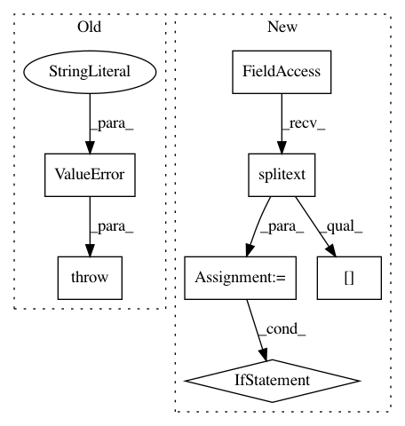

e8db6660b202733a5764e9e9add869dbde8dbc32,skll/utilities/join_features.py,,main,#Any#,23
Before Change
valid_extensions = [ext for ext in EXT_TO_READER if ext != ".libsvm"]
if input_extension == ".libsvm":
raise ValueError("Cannot join LibSVM files. Please use skll_convert"
" to convert to a different datatype first.")
elif input_extension not in valid_extensions:
logger.error(("Input file must be in either .arff, .csv, .jsonlines, "
".megam, .ndj, or .tsv format. You specified: "
"{}").format(input_extension))
After Change
valid_extensions = [ext for ext in EXT_TO_READER if ext != ".libsvm"]
// make sure the input file extensions are those we can process
input_extensions = [os.path.splitext(inf)[1].lower() for inf in args.infile]
output_extension = os.path.splitext(args.outfile)[1].lower()
// make sure all the files are in the same format except libsvm files
input_extension_set = list(set(input_extensions))
if len(input_extension_set) > 1 or input_extension_set[0] not in valid_extensions:
logger.error(("All input files must be in the same format: .arff, .csv, .jsonlines, "
".megam, .ndj, or .tsv format."))
sys.exit(1)
if output_extension != input_extension_set[0]:
logger.error(("Output file must be in the same format as the input file. "
"You specified: {}").format(output_extension))
sys.exit(1)
In pattern: SUPERPATTERN
Frequency: 3
Non-data size: 7
Instances
Project Name: EducationalTestingService/skll
Commit Name: e8db6660b202733a5764e9e9add869dbde8dbc32
Time: 2014-11-06
Author: nmadnani@ets.org
File Name: skll/utilities/join_features.py
Class Name:
Method Name: main
Project Name: EducationalTestingService/skll
Commit Name: e8db6660b202733a5764e9e9add869dbde8dbc32
Time: 2014-11-06
Author: nmadnani@ets.org
File Name: skll/utilities/filter_features.py
Class Name:
Method Name: main
Project Name: deepfakes/faceswap
Commit Name: 9461c597736ad6ac419a392edeca9221aa53e238
Time: 2020-04-09
Author: 36920800+torzdf@users.noreply.github.com
File Name: scripts/train.py
Class Name: Train
Method Name: _set_timelapse